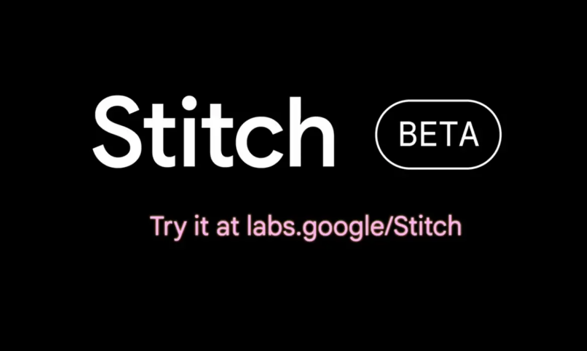

Afternoon Project Challenge
Task:
Design an app idea (e.g., something with a social impact like SafeWalk).
Steps:
- Inspiration – Explore Google Stitch to see how AI can generate and support UI concepts.
- Screens – Collect screen inspiration and import it into Figma as a starting point for your design.
- Prototype – Develop a high-fidelity prototype in Figma.
- Test – Share and test your prototype with fellow students. Gather quick feedback.
Deliverable:
- A high-fidelity Figma prototype with at least one complete user flow (from entry → core task → outcome).
- A short reflection (2–3 minutes verbal or written) on what worked well and what you’d improve.
